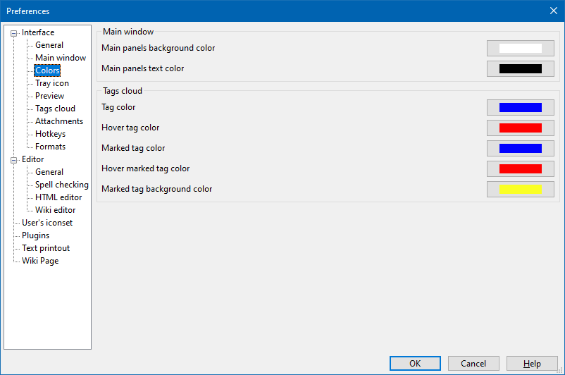

Interface - Colors

In this section you can set main colors for main window of Outwiker.
The parameters in the Main window group allows you to set background and text color for the main window ("Notes", "Tags" and "Attachments" panels). This can be useful when you use a dark theme in the operating system and want OutWiker to look the same.
The Tags cloud group allows you to set colors for the "Tags" panel.